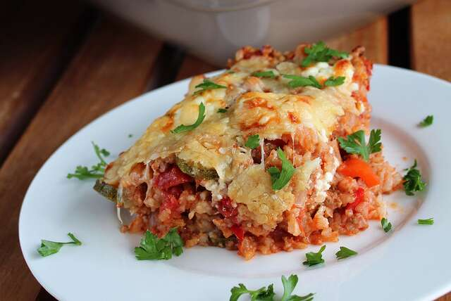

LASAGNA

Description
This low-carb spin on stuffed peppers is a decadent and rich casserole that everyone is sure to love. Cauliflower florets take the place of rice to keep it keto-friendly.
Ingredients
- 1 head cauliflower, broken into florets
- 1 pound ground beef
- ½ cup onion, chopped
- 2 cloves garlic, minced
Steps
- Preheat oven to 350 degrees F (175 degrees C).
- Place cauliflower in a food processor and pulse into grounds the size of rice grains. Transfer to a large casserole dish.
- Combine beef, onion, and garlic in a skillet over medium heat; cook and stir until meat is browned and onion is tender, about 5 minutes. Add green bell peppers and Italian seasoning; continue cooking until slightly tender, about 2 minutes.
- Drain excess moisture from the beef mixture. Add tomatoes and beef broth. Simmer until flavors combine, about 5 minutes. Add mixture to the cauliflower in the casserole dish; mix to combine. Shake coconut aminos over the casserole; top evenly with Cheddar cheese.
- Bake in the preheated oven until sauce is bubbly, about 35 minutes.